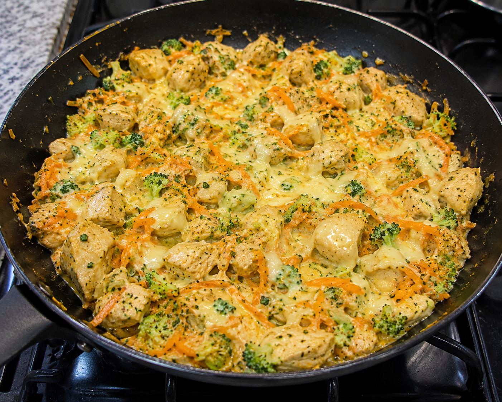

Receitas
Bolo Fit
Ingredientes:
- 2 ovos
- 1 banana madura
- 1/2 xícara de chá de aveia
- 1/4 xícara de chá de cacau 100%
- 1/2 xícara de chá de leite
- 1 colher de sopa de óleo de coco
- 1 colher de chá de fermento em pó
Modo de preparo:
- Pré-aqueça o forno a 180°C.
- Em um liquidificador, bata os ovos, a banana, a aveia, o cacau, o leite e o óleo de coco até obter uma mistura homogênea.
- Adicione o fermento em pó e misture delicadamente.
- Despeje a massa em uma forma untada e leve ao forno por cerca de 25 minutos ou até que um palito saia limpo ao ser inserido no centro do bolo.
- Deixe esfriar antes de desenformar e servir.

Escondidinho de Mandioca
Ingredientes:
- 500g de mandioca cozida e amassada
- 500g de carne moída
- 1 caixinha de creme de leite
- 100g de queijo muçarela ralado
- 1/2 xícara de leite
- 2 colheres de sopa de manteiga
- Sal e temperos a gosto
- 1 colher de sopa de óleo
- 3 colheres de molho de tomate
Modo de preparo do recheio:
- Refogue a cebola e o alho em uma panela até dourarem.
- Adicione a carne moída, tempere com sal e pimenta, e cozinhe até que esteja bem dourada.
Modo de preparo da mandioca:
- Em outra panela, cozinhe a mandioca até que esteja macia.
- Amasse a mandioca e misture com o leite, a manteiga e o creme de leite até obter um purê cremoso.
Montagem:
- Em um refratário, coloque uma camada do purê de mandioca.
- Adicione o recheio de carne moída por cima.
- Cubra com o restante do purê de mandioca.
- Polvilhe o queijo muçarela ralado por cima.
- Leve ao forno preaquecido a 180°C por cerca de 20 minutos ou até que o queijo esteja derretido e dourado.

Frango Cremoso
Ingredientes:
- 500g de peito de frango cortado em cubos
- 1 cenoura ralada
- 1 xicara de brocolis triturado ou picado
- 100 a 150g de queijo mussarela ralado
- 1 caixinha de creme de leite
- 2 colheres de requeijão
- 2 colheres de sopa de óleo
- Sal e temperos a gosto
Modo de preparo:
- Aqueça o óleo em uma panela e refogue a cebola e o alho até dourarem.
- Adicione o frango e cozinhe até que esteja completamente cozido.
- Tempere com sal e pimenta a gosto.
- Adicione o creme de leite, o requeijão e o queijo mussarela ralado e misture bem.
- Cozinhe por mais alguns minutos até que o molho esteja cremoso.
- Adicione a cenoura ralada e o brócolis picado, misturando delicadamente.
- Sirva quente acompanhado de arroz ou outro acompanhamento de sua preferência.
